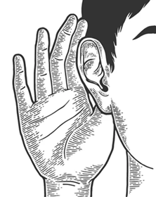

Un escuchador de evento, es como un "guardia de seguridad" que se asignas a un elemento HTML específico (un
botón, un formulario...) al cual se le desea asignar funciones (el típico
<button onclick='funcion()'> ). Este guardia se queda esperando a que ocurra una
acción (evento)concreto (un clic, un scroll, una pulsación de tecla). Cuando el evento sucede, "el
guardia" ejecuta una función de inmediato.
Para crearlos usamos el método addEventListener()

elementoHTML.addEventListener(evento, funcionCallback, opciones);
const CALCULAR = document.getElementById("calcular")
click', 'keydown',
'submit').
<p><button id='saludo1' onclick='saludar1()'>Clica aquí</button></p>
<p><button id='saludo2'>Clica aquí</button></p>
<script>
const SALUDO = document.getElementById('saludo2')
// 1. Guardamos la función flecha (recibiendo el parámetro 'e' opcional)
const saludar2 = (e) => {
alert("¡Hola!");
};
// 2. Registramos el escuchador pasando SOLO la referencia de la función
SALUDO.addEventListener('click', saludar2);
</script>
...
e o event)Cuando un evento ocurre, JavaScript crea automáticamente un objeto con toda la información sobre lo que acaba
de pasar y se lo pasa como argumento a la función Callback. Para guardarlo se recibe en un parámetro llamado
convencionalmente e o event. Este objeto guarda varias propiedades y métodos
importantes:
e.target: El elemento exacto que originó el evento.e.currentTarget: El elemento que tiene el escuchador asignado.e.preventDefault(): Un método crucial para detener el comportamiento por defecto del navegador
(por ejemplo, evitar que una página se recargue al enviar un formulario).Dejar miles de escuchadores activos en una aplicación puede hacer que consuma mucha memoria. Cuando ya no se necesita vigilar un elemento, se debe remover el escuchador. Para poder remover un escuchador la función callback no puede ser anónima (o una función flecha directa).
elementoHTML.removeEventListener(evento, funcionCallback);
⚠️ Recuerda: Si no almacenamos la función en una variable entonces no podremos removerla. No habría forma de “volver a leer” los escuchadores de evento asignados por addEventListener.
SALUDO.removeEventListener('click', saludar2);